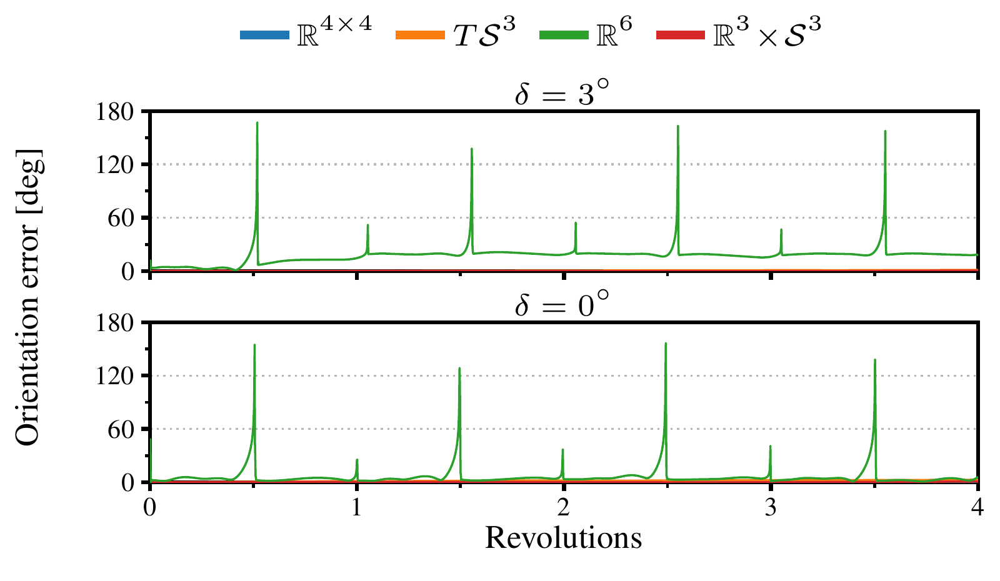

Code will be shared publicly upon acceptance.
Explore all 3,960 runsLearning dynamical systems is a promising route to full-pose robot motion policies that are expressive, safe, and generalizable. These properties arise from inductive biases that capture the non-Euclidean geometry of the state space and enforce convergence to a goal pose. Integrating them raises several design choices whose practical consequences remain unclear. In this paper, we analyze these alternatives theoretically and compare them empirically along four axes: manifold representation of the pose, tangent space in which velocities are learned, velocity reference frame, and velocity parametrization. We compare three full-pose dynamical systems: one without stability guarantees and two stable systems based on diffeomorphisms defined on the Lie algebra or directly on the manifold. Our results indicate that homogeneous matrices, unit quaternions, and unit dual quaternions perform interchangeably, while Euler angles degrade sharply near gimbal lock. In contrast, the diffeomorphism proves decisive: defining it directly between manifolds, with velocities learned in the tangent space of the current state, yields the highest accuracy across all models.
We train three full-pose dynamical systems: an MLP, which admits every combination of the four axes, and two stable systems whose learned diffeomorphism is defined either on Euclidean representations (\(\boldsymbol{\psi}\)) or between manifolds (\(\boldsymbol{\psi}_{\mathcal{M}}\)). We refer to the paper for details.
| Config. ID | Input space | Vel. space | Frame | Param. |
DS (MLP) |
Stable DS | |
|---|---|---|---|---|---|---|---|
| \(\boldsymbol{\psi}\) | \(\boldsymbol{\psi}_{\mathcal{M}}\) | ||||||
| \(\mathfrak{m}_{\mathrm{spatial}}^{\wedge}\) | \(\mathcal{M}\) | \(\mathfrak{m}\) | Spatial | \((\cdot)^{\wedge}\) | ✓ | ✗ | ✗ |
| \(\mathfrak{m}_{\mathrm{body}}^{\wedge}\) | \(\mathcal{M}\) | \(\mathfrak{m}\) | Body | \((\cdot)^{\wedge}\) | ✓ | ✗ | ✗ |
| \(\mathcal{T}_{\boldsymbol{e}}\mathcal{M}^{\Pi_{\boldsymbol{e}}}\) | \(\mathcal{M}\) | \(\mathfrak{m}\) | Body | \(\Pi_{\boldsymbol{e}}\) | ✓ | ✗ | ✗ |
| \(\mathcal{T}_{\boldsymbol{x}}\mathcal{M}^{\Pi_{\boldsymbol{x}}}\) | \(\mathcal{M}\) | \(\mathcal{T}_{\boldsymbol{x}}\mathcal{M}\) | — | \(\Pi_{\boldsymbol{x}}\) | ✓* | ✗ | ✓ |
| \({}^{\vee}\mathfrak{m}_{\mathrm{spatial}}^{\wedge}\) | \(\mathfrak{m}\) | \(\mathfrak{m}\) | Spatial | \((\cdot)^{\wedge}\) | ✗ | ✓* | ✗ |
| \({}^{\vee}\mathfrak{m}_{\mathrm{body}}^{\wedge}\) | \(\mathfrak{m}\) | \(\mathfrak{m}\) | Body | \((\cdot)^{\wedge}\) | ✗ | ✓ | ✗ |
| Notation | |
|---|---|
| \(\mathcal{M}\) | the pose manifold |
| \(\mathfrak{m}\) | the Lie algebra of \(\mathcal{M}\) |
| \(\mathcal{T}_{\boldsymbol{x}}\mathcal{M}\) | the tangent space at the current pose \(\boldsymbol{x}\) |
| \((\cdot)^{\wedge}\) | wedge: \(\mathbb{R}^{6} \rightarrow \mathfrak{m}\), the velocity as a Lie algebra element |
| \({}^{\vee}(\cdot)\) | vee: \(\mathfrak{m} \rightarrow \mathbb{R}^{6}\), the inverse mapping |
| \(\Pi_{\boldsymbol{e}}\), \(\Pi_{\boldsymbol{x}}\) | projection onto \(\mathcal{T}_{\boldsymbol{e}}\mathcal{M}\), \(\mathcal{T}_{\boldsymbol{x}}\mathcal{M}\) |
| \(\boldsymbol{\psi}\) | Euclidean diffeomorphism |
| \(\boldsymbol{\psi}_{\mathcal{M}}\) | manifold diffeomorphism |
Summary of the evaluated formulations for each pose representation. Note that, for the flat baseline on \(\mathbb{R}^{6}\), the configurations collapse into a single formulation per model, reported in the configurations marked with *.
The geometry of the diffeomorphism is crucial. Defining it directly between manifolds, with velocities learned in the tangent space of the current state, yields the highest accuracy across all models.
Manifold pose representations and velocity frames are interchangeable. Homogeneous matrices, unit quaternions and unit dual quaternions perform on par across all 22 tasks, as do the spatial and body velocity frames. Thus, both can be chosen to suit the task at hand.
Accuracy across pose representations on the trimmed 22-task FastUMI dataset, averaged over tasks. All representations are comparable, with gaps small enough to be random variation. Best per configuration in bold.
Euler angles are the exception, and they fail predictably. Orientation error degrades sharply wherever the task passes near gimbal lock; every other representation is unaffected.

Click on a row in the interactive viewer to browse reconstructions and orientation error plots for a specific configuration and task.